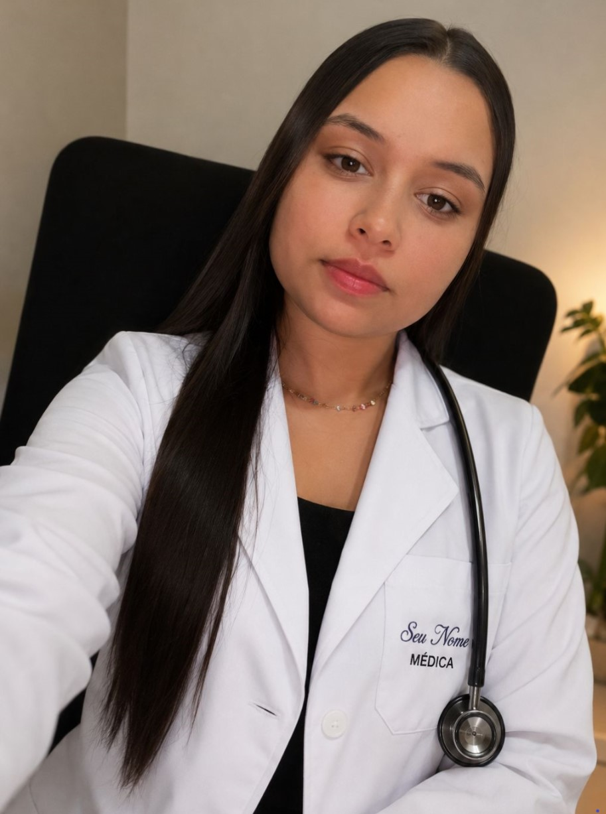

1. Abra a pasta Quem Somos
Entenda a missão, a experiência e o compromisso da Dra. Maria Eduarda.
Prime Kids Medicina Especializada
Seu filho merece um cuidado pediátrico acolhedor, científico e responsável. Na consulta com a Dra. Maria Eduarda, cada momento é dedicado a ouvir a criança, responder às preocupações dos pais e construir um plano de cuidado que promove saúde e confiança. Priorizamos atenção individualizada, acompanhamento preventivo e orientações claras para que pais e filhos se sintam seguros em todas as fases do desenvolvimento.
Medicina pediátrica é muito mais do que consultas: é um compromisso com cada etapa do crescimento, com cada dúvida dos pais e com cada pequeno paciente que merece ser ouvido e compreendido.
Na prática da Dra. Maria Eduarda Carvalho, cada consulta é conduzida com rigor científico e afeto. O objetivo é proteger a infância, prevenir doenças, promover hábitos de vida saudáveis e garantir que a criança se desenvolva com saúde, segurança e confiança.
Se você busca uma pediatra que entende as necessidades da sua criança, acolhe suas preocupações e oferece um cuidado humano e especializado, este é o momento certo para agendar sua consulta.



PRIME KIDS MEDICINA ESPECIALIZADA
Bem-vindo à nossa plataforma de cuidado integral.
Para garantir uma experiência de navegação otimizada e acesso ágil aos nossos serviços, estruturamos nossa plataforma em Eixos Temáticos. Explore os diretórios abaixo para encontrar informativos científicos, suporte assistencial e ferramentas exclusivas, desenvolvidas para elevar o padrão de saúde e bem-estar do seu filho.
Entenda a missão, a experiência e o compromisso da Dra. Maria Eduarda.
Conheça os cuidados pediátricos oferecidos e como cada serviço ajuda sua família.
Use a área de login para simular o acesso ao portal de pacientes e acompanhar o atendimento.
Conheça a história da Dra. Maria Eduarda e o compromisso com cada criança e cada família.
Descubra como oferecemos cuidado pediátrico completo para cada fase do desenvolvimento.
Área de acesso para pacientes e responsáveis acompanharem o atendimento.
Agende sua consulta com a Dra. Maria Eduarda e garanta atenção dedicada ao seu filho.